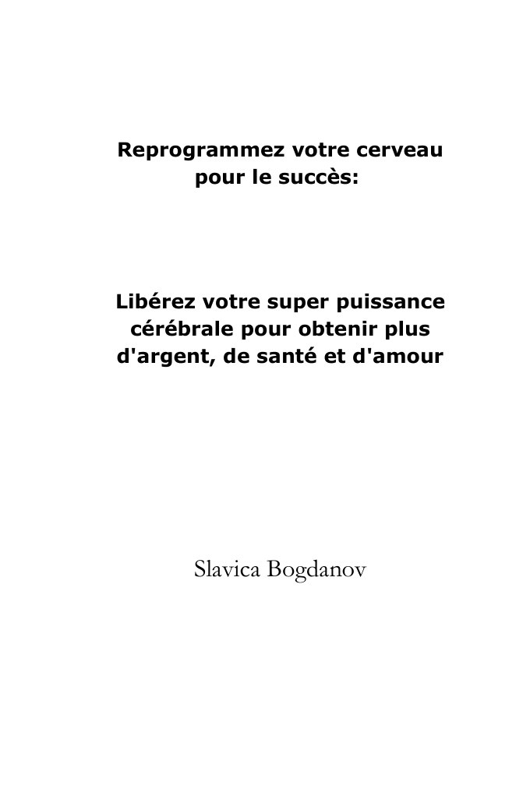

Reprogrammez votre cerveau pour le succès





Carte d’identité
- Auteur
- Slavica Bogdanov
- Genre
- Vie et société
- Sous-genre
- Développement personnel
- Éditeur
- Non renseigné
- Parution de l’édition
- Non établie
- ISBN
- Non confirmé
- Autres ISBN
- 9781490590813 (broché CreateSpace, 2013)
- Langue de l’édition
- Français
- Fichier du site
- PDF · 142 pages
Copyright 2012 dans le PDF. Les numéros imprimés dans le fichier sont incomplets. La notice du broché indique 2013.
 Résumé du livreL’essentiel en quelques lignes
Résumé du livreL’essentiel en quelques lignes
Slavica Bogdanov s’intéresse aux croyances que l’on répète sur soi et à la place qu’elles prennent dans les décisions. Elle propose de les repérer, d’essayer une autre manière de penser et de l’exercer dans la durée. Le livre présente l’approche de développement personnel de l’autrice.
 Chapitre par chapitre5 entrées
Chapitre par chapitre5 entrées
-
01 Le fonctionnement du cerveau selon l’autricePDF p. 16
Bogdanov présente sa manière d’expliquer les réactions automatiques et les habitudes de pensée. Le chapitre pose le cadre de développement personnel utilisé dans les exercices.
Lire à cette page ↗ -
02 Orienter son attentionPDF p. 38
L’autrice propose des images et de petites expériences pour montrer ce qui devient visible quand on dirige son attention autrement. Elle rattache cette observation à la définition d’un but.
Lire à cette page ↗ -
03 L’effet des croyancesPDF p. 44
Le chapitre examine les phrases que l’on tient pour acquises sur soi ou sur ses possibilités. Bogdanov propose de reconnaître celles qui influencent les décisions quotidiennes.
Lire à cette page ↗ -
04 Mettre une croyance à l’épreuvePDF p. 82
L’autrice revient sur plusieurs exercices pour regarder autrement une conviction limitante. Elle raconte aussi une expérience qui lui fait questionner des méthodes trop brutales.
Lire à cette page ↗ -
05 S’entraîner à changer de réponsePDF p. 100
La dernière partie compare le changement d’habitude à l’apprentissage d’un nouvel itinéraire. Elle insiste sur la répétition et sur la difficulté de maintenir ce changement dans les situations familières.
Lire à cette page ↗
Les fils du livre


Mon carnet de lecture
Mes étoiles
0 critique
Ma critique sur ce livre ↗